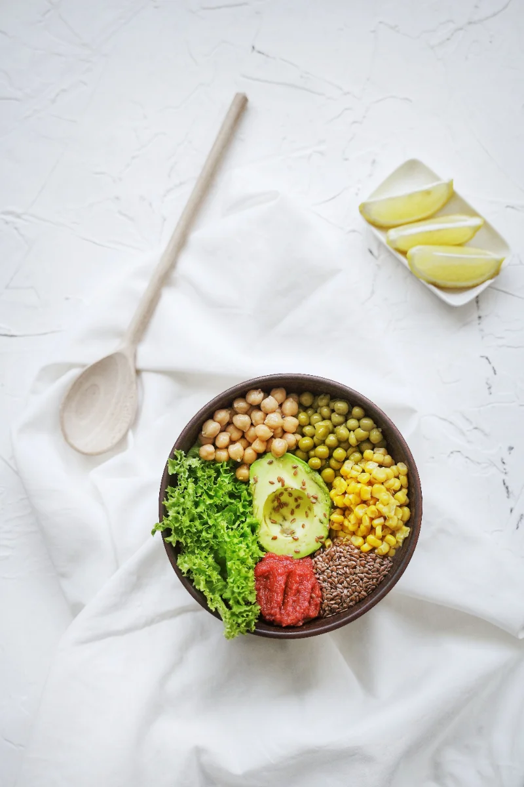

Culture

What a shared table really means, city to city
A look at communal dining rituals from three continents, and why we keep coming back to them.
The Stackly Journal
Food culture, kitchen secrets, and the people behind every plate — told one story at a time.


Delivery-only spaces are quietly reshaping how restaurants operate. We spent a week inside three ghost kitchens to see what's really cooking after dark — and what it means for the food that lands on your table.
Read the full storyExplore
A look at communal dining rituals from three continents, and why we keep coming back to them.

Small jars, big flavor swings — the blends our partner chefs reach for first.

A small dining-room team, one menu rework, and the data that changed their weekends.

One base recipe, six swaps — a weeknight formula worth memorizing.

The small wording cues that hint at how a dish is actually made.

On pop-up supper clubs and the quiet appeal of eating with people you just met.
Trending now




From the kitchen
 Line 3, 7pm
Line 3, 7pm Pastry pass
Pastry pass Morning pour
Morning pour Plating check
Plating check Sunday prep
Sunday prep Box fresh
Box fresh Rider drop-off
Rider drop-off Table for four
Table for fourBehind the byline
Writes about dining rituals and the stories behind shared tables. Three years covering the city's food scene.
Reports from inside partner kitchens — the systems, the pressure, and the craft that rarely gets seen.
Builds the weeknight recipes and pantry guides. Believes a good 20-minute meal beats a great 2-hour one.
Tells the growth stories of the kitchens on Stackly, from single-location to city-wide.
Stay fed
Join 12,400+ readers. One email a week — no spam, just genuinely good food writing.
You're on the list — welcome aboard! 🎉
Fresh off the press